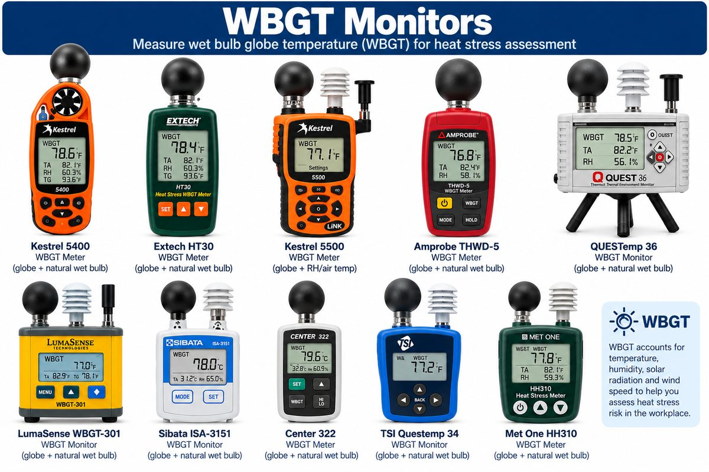
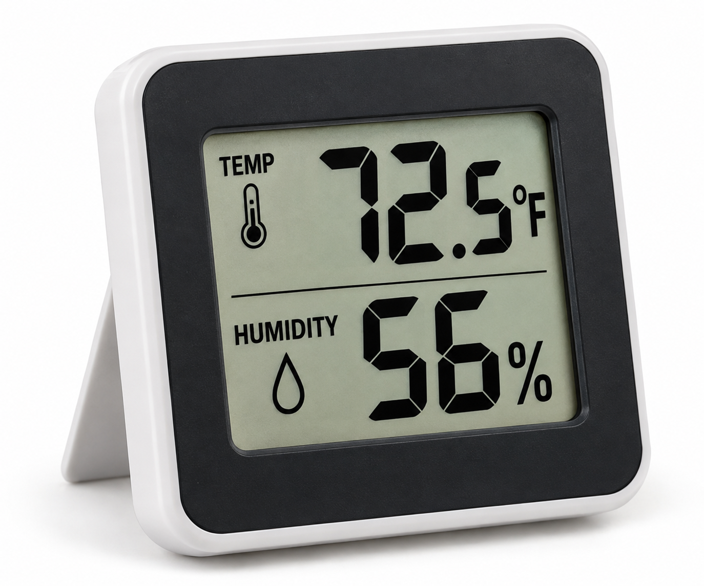
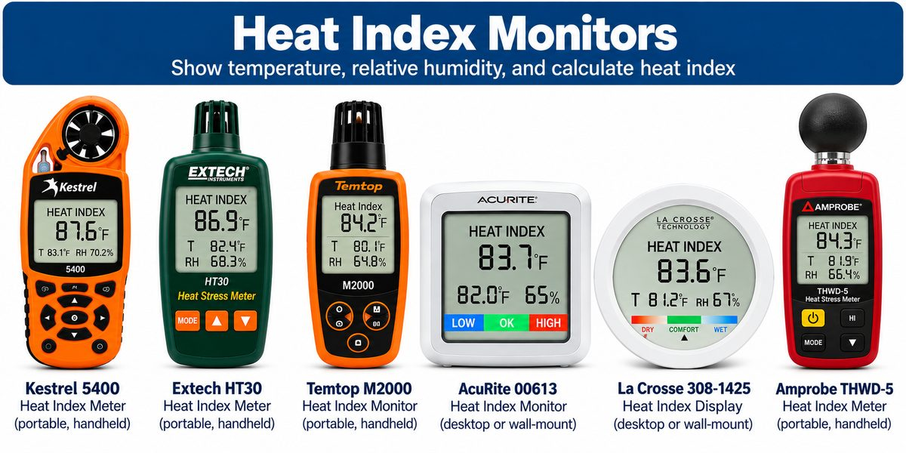

An outreach project of the Great Lakes Center for Occupational Health and Safety
Choose a measurement method and select temperature
Wet Bulb Globe Thermometer
(WBGT)

Information
Select
Temperature + Humidity

Information
Select
Heat Index

Information
Select
Thermometer Only
🌡️
Information
Select
×
✕
Enter Your Reading
✕
Direct WBGT reading
Calculate from components
WBGT Value
°F
°C
Please enter a value.
Environment
🏢 Indoors
☀️ Outdoors
Natural Wet Bulb
°F
°C
Please enter a value.
Globe Temperature
°F
Please enter a value.
Dry Bulb
°F
Please enter a value.
WBGT
—
Air Temperature
°F
°C
Please enter a temperature.
Relative Humidity
%
Please enter a value between 0 and 100.
Find My Work-Rest Cycle →
Health Factors
Methodology
Feedback
Great Lakes Center for Occupational Health and Safety